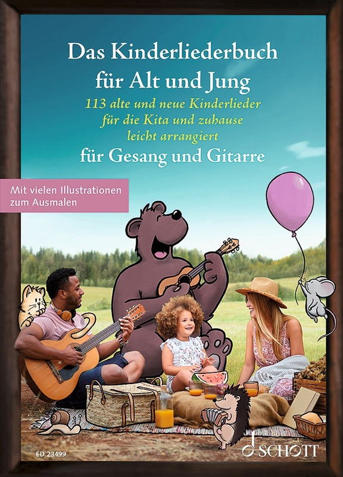

Unsere Liederbücher
Alle Bände der Reihe – erhältlich bei Schott Music, Amazon und im Buch- und Musikfachhandel
Gitarre · Ukulele
Das Fetenbuch
100 Hits leicht arrangiert für Gitarre oder Ukulele – Klassiker aus Pop, Rock und Schlager.
Gitarre · Ukulele
Das Rock & Pop Fetenbuch
100 Meilensteine der Popgeschichte – von den Beatles bis zur Gegenwart.

Gitarre · Ukulele
Das Rock & Pop Fetenbuch 2
100 weitere Popsongs – von Elvis und den Beatles bis zu Ed Sheeran, Taylor Swift und The Weeknd.
Gitarre · Ukulele
Das Schlagerbuch
100 beliebte Songs aus 60 Jahren Schlagergeschichte – von Roy Black bis Roland Kaiser.

Gitarre · Ukulele · Klavier
Das Kinderliederbuch
113 alte und neue Kinderlieder für die Kita und zu Hause – für Gitarre, Ukulele und Klavier.
Gitarre · Ukulele · Klavier
Das Weihnachtsliederbuch
100 Weihnachtslieder für Gitarre, Ukulele, Klavier und mehr – für eine stimmungsvolle Weihnachtszeit.
Gitarre · Ukulele
Das Folk- und Volksliederbuch
100 Folksongs und Volkslieder – von deutschen Wanderliedern bis zu internationalen Klassikern.